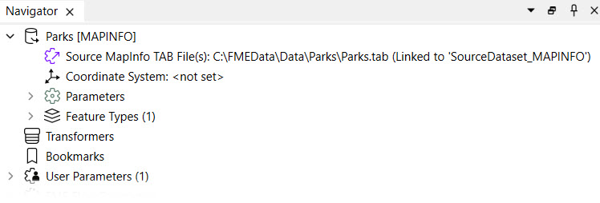
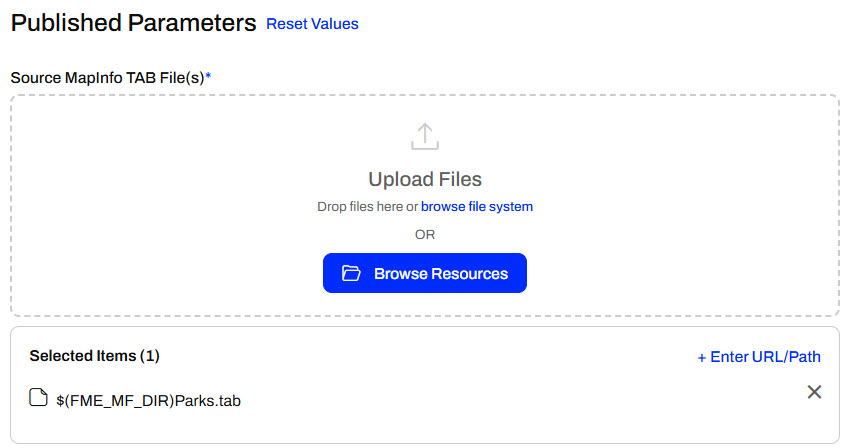

One of the simplest methods for storing source data for FME Flow workspaces is publishing data to a repository. When the source data for a translation is stored as files (rather than a feed or database), publishing data to an FME Flow repository along with the workspace is possible. This data upload method is fast and straightforward, but it limits future access to the data. It's better practice to publish your data in the Resources folder, separate from the workspace, which will be covered in the next lessons.
Often, source file datasets are stored locally on your computer that hosts FME Workbench. However, FME Flow is usually hosted on another server so local file paths to datasets will usually fail on FME Flow because the data doesn't exist in that location on the FME Flow server.
In this workspace, the source dataset is a MapInfo TAB stored on the local computer drive.

A MapInfo TAB dataset consists of a series of files (.tab, .dat, .id, .map). When you publish this workspace, the publishing wizard can publish the data files alongside it by simply checking the box labeled "Upload data files."
FME automatically selects the files to upload based on what it thinks is necessary to run the translation. If there are other files you wish to upload, or files FME selected that you don't want to upload, the Select Files button allows you to make changes.
At the top, it also shows that the selected files will be uploaded to the Repository, meaning the files will be stored in the same repository folder as the workspace.
Once the publishing wizard is complete, those files are uploaded to FME Flow and are accessible along with this workspace.
When a workspace published with its data is run on FME Flow, the uploaded data is automatically used as the source data for the workspace to run. The $(FME_MF_DIR) parameter references the repository for the selected workspace.

No other settings need to be changed to use the uploaded data in the repository; the workspace will run to completion using the published data as its source.
For the exercises in this course, you are a technical analyst in the GIS department of your local city.
You have already created a workspace that reads in voting location points from a GML file and clips them to another layer of neighborhood polygons stored in a KML file. This workspace is used to backup data to a database, making some transformations to fit specifications for the database. Now you need to test publishing your data and workspace to FME Flow, including running it to make sure the data was published correctly.
Open the starting workspace template (C:\FMEData\Workspaces\CreateDataIntegrationApps\exercise-publish-data-with-a-workspace.fmwt) using FME Workbench.

You can see the workspace reads in Neighborhood polygons from KML and reprojects them to UTM83-10 to match VotingPlaces points (read from GML). The Clipper then clips VotingPlaces by the Neighborhoods boundaries and writes out a separate layer of voting places for each neighborhood. The neighborhood boundaries are also written as a layer.
In order for this workspace to run properly on FME Flow, the Flow machine needs access to VotingPlaces and Neighborhoods. In this example, these datasets are included in the workspace template. However, if the workspace was published as-is to FME Flow, these datasets would not be available and the job would fail. In the remainder of the exercise, we'll go over how to upload the data when you publish the workspace.
Run the workspace locally to make sure it works before publishing it to FME Flow.
You may also get an Unexpected Input dialog. It reports that the KML file has additional feature types that were read but are not present as feature types on the canvas. We don't need that data, so we can ignore this dialog.
Publish the workspace to FME Flow.
If it's saved, choose the previously created FME Flow connection. Or, select Add Web Connection again from the dropdown menu to reconnect. If you are taking a Safe Software course, you can use these credentials:
Create a repository by clicking the New... button, enter the name "Training". Enter a name for the workspace if it doesn't already have one.
You could check "Upload data files" to upload all the data files. But we want to make sure the correct data is being uploaded, so click the Select Files button:

This dialog lists the files we are about to publish to the repository with the workspace. Ensure all files are checked and click OK:

The paths to your files will look slightly different due to the use of a workspace template.
This is a basic example of how to upload data to upload data from FME Form to FME Flow. In practice, it's strongly recommended for users to publish your data to the FME Resources folder instead of a repository.
Click Next.
In the final dialog of the publishing wizard, choose Job Submitter as the service to register the workspace against, then click Publish.
If you have access to the FME Flow computer itself, open a file browser and browse to the location that repository data is stored. On Safe Software training virtual machines, it is C:\ProgramData\Safe Software\FMEFlow\repositories\Training:
You'll see that each workspace is saved to a separate folder. If you inspect the contents of a folder, you'll see the uploaded datasets within it.
This is how a workspace has access to files published with it. It can also, with some manual effort, access files stored with another workspace in the same repository, but this is not recommended.
Files and folders in the FME Flow folder may be hidden when using Windows. Make sure you turn on hidden files and folders if you wish to view them.
If you don't have access to the FME Flow machine you are working with, you can view the data using the FME Flow web interface. Navigate to Workspaces > Training and click the folder icon in the Files column:

Log in to FME Flow, locate and run the workspace. In the Run dialog, notice that the parameters for the source data paths include an FME environment variable, $(FME_MF_DIR):
This variable tells FME to look in the same folder as the workspace for the source data files. As you can see, handling data in this way isn't particularly user-friendly, even though the workspace will run just fine.
Click Run, and the workspace should successfully find the data and run to completion.